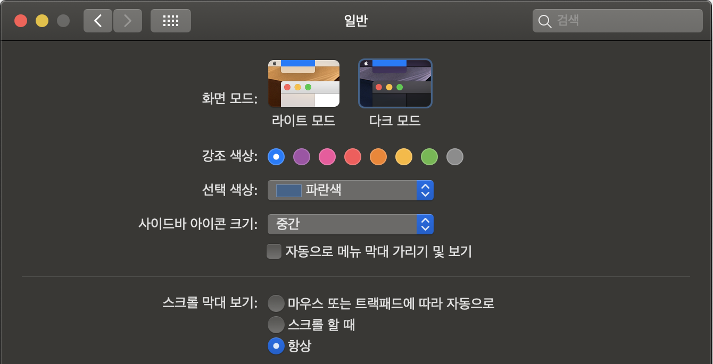

최근 들어 다크 모드가 엄청난 관심을 받고 있다. 애플은 iOS랑 MacOS 운영체제에 다크 모드를 추가했고, 윈도우와 구글도 애플처럼 다크 모드를 추가했다.
 DuckDuckGo’s 라이트 모드와 다크 모드
DuckDuckGo’s 라이트 모드와 다크 모드
자 그럼 웹사이트의 다크 모드에 대해 알아보자. 다크 모드 디자인을 구현하기 위한 다양한 옵션과 접근 방식, 그리고 그에 수반되는 기술적 고려 사항을 살펴보고, 그 과정에서 몇 가지 디자인 팁을 함께 다루어보자.
- Part 1: 테마 변경하기(Toggling Themes)
- Part 2: 운영체제 단계에서 다크 모드
- Part 3: 사용자 설정 저장
- Part 4: UA 스타일 다루기
- Part 5: 응용하기
- Part 6: 디자인 고려사항
- Part 7: 다크 모드 활용 예시
테마 변경하기(Toggling Themes)
일반적으로 사이트는 이미 라이트(기본) 테마가 있고, 우리는 그것보다 상대적으로 어두운 테마를 만들려고 한다. 혹은 처음부터 라이트 테마 다크 테마 둘 다 만들 수도 있다. 하나의 테마는 사용자가 처음 방문할 때 보는 기본값으로 되어야 하는데 그게 보통 라이트 모드다. (사용자의 브라우저가 대신 선택할 수도 있다.) 다른 테마로 전환하는 스위치를 추가하는 방법도 있다. (자동으로 전환되게 할 수도 있다. 이따가 더 살펴보자) - 말 그대로 사용자가 버튼을 클릭하면 색상 테마가 변경되는 방법이다.
색상 테마 변경을 위한 몇 가지 방식들이 있다.
-
Using a Body Class
페이지 어느 곳이든 스타일을 변경하기 위한 클래스를 교체할 수 있다.
<body class="dark-theme || light-theme">클래스를 변경하는 토글 버튼 스크립트 예시:
// Select the button const btn = document.querySelector('.btn-toggle'); // Listen for a click on the button btn.addEventListener('click', function() { // Then toggle (add/remove) the .dark-theme class to the body document.body.classList.toggle('dark-theme'); })사용하는 방법은 다음과 같다.
<body> <button class="btn-toggle">Toggle Dark Mode</button> <h1>Hey there! This is just a title</h2> <p>I am just a boring text, existing here solely for the purpose of this demo</p> <p>And I am just another one like the one above me, because two is better than having only one</p> <a href="#">I am a link, don't click me!</a> </body>이 방식의 아이디어는 평소처럼 스타일을 지정하고 그것을 "Default" 모드라 부르고,
<body>태그에 "Dark" 모드로 쓸 클래스를 넣어 색상 스타일을 세팅한다.기본이 밝은 색상라 치고, 모든 "밝은(라이트)" 스타일은 평소처럼 css를 만든다. 지정한 HTML의 바디와 링크에 글로벌하게 스타일을 적용한다.
body { color: #222; background: #fff; } a { color: #0033cc; }밝은 배경(
#fff)에 다크 텍스트(#222)와 다크 링크(#003322)를 만들었다. 그럼 "Default"테마가 탄탄하게 시작된다.이제 이 속성값을 재정의 해보자. 이번에는 다른 body에 클래스를 설정한다.
body { color: #222; background: #fff; } a { color: #0033cc; } /* Dark Mode styles */ body.dark-theme { color: #eee; background: #121212; } body.dark-theme a { color: #809fff; }다크 테마 스타일들은 우리가
<body>태그에 적용한 같은 부모 클래스의 후손이 된다. (.dark-theme)body 클래스를 다크 모드로 전환하려면 어떻게 해야할까? JavaScript를 사용할 수 있다. button 클래스를 (
.btn-toggle) 고르고 클릭시 리스너를 추가하고난 뒤에 body의 다크 모드 클래스(.dark-theme)를 추가한다. 이는 종속성과 특이성 덕분에 "밝은" 색상들을 효과적으로 재정의한다.See the Pen Method 1 - Class Swapping by Mohamed Adhuham (@adhuham) on CodePen.
-
Using Separate Stylesheets
모든 스타일을 하나의 stylesheet에 넣기보다는, 테마별로 stylesheet를 전환할 수 있다. 전체 stylesheetㄹㄹ 가지고 있다고 가정하고 간다.
예를들어, 기본 라이트 테마는
light-theme.css:/* light-theme.css */ body { color: #222; background: #fff; } a { color: #0033cc; }다크 테마 스타일은 만들어서 별도의 다크 테마 stylesheet
dark-theme.css에 저장한다./* dark-theme.css */ body { color: #eee; background: #121212; } body a { color: #809fff; }이 두개의 분리된 stylesheet를 html
<head>로 연결한다.<!DOCTYPE html> <html lang="en"> <head> <link href="light-theme.css" rel="stylesheet" id="theme-link"> </head> </html>JavaScript로 선택할 수 있는
#theme-link사용하여 라이트 테마와 다크 테마 사이를 전환할 수 있다. 이번에만 클래스대신 파일을 전환한다.// Select the button const btn = document.querySelector(".btn-toggle"); // Select the stylesheet <link> const theme = document.querySelector("#theme-link"); // Listen for a click on the button btn.addEventListener("click", function() { // If the current URL contains "ligh-theme.css" if (theme.getAttribute("href") == "light-theme.css") { // ... then switch it to "dark-theme.css" theme.href = "dark-theme.css"; // Otherwise... } else { // ... switch it to "light-theme.css" theme.href = "light-theme.css"; } }); -
Using Custom Properties
CSS 커스텀의 강력한 기능을 활용하여 다크 테마를 만들 수 있다. 각 테마에 별도의 스타일 규칙을 주지 않아도 되므로, 훨씬 빠르게 스타일을 작성하고 필요한경우 테마를 더 쉽게 바꿀 수 있다.
여전히 바디의 클래스를 교체하고 해당 클래스를 사용하여 다시 사용자 지정 세팅을 할 수도 있다:
// Select the button const btn = document.querySelector(".btn-toggle"); // Listen for a click on the button btn.addEventListener("click", function() { // Then toggle (add/remove) the .dark-theme class to the body document.body.classList.toggle("dark-theme"); });우선, 기본 밝은 색상을 사용자 지정 속성으로 정의를 한다:
body { --text-color: #222; --bkg-color: #fff; --anchor-color: #0033cc; }그리고 방금 했던것 처럼 바디의
.dark-theme클래스 아래로 속성들을 재지정 할 수 있다.body.dark-theme { --text-color: #eee; --bkg-color: #121212; --anchor-color: #809fff; }다음은 사용자 지정 속성을 사용하는 바디 및 링크 요소에 대한 룰셋이다.
body { color: var(--text-color); background: var(--bkg-color); } a { color: var(--anchor-color); } -
Using Server-Side Scripts
이미 PHP 같은 server-side 언어로 작업하고 있다면 JavaScript 대신 사용할 수 있다. 마크업에 직접 작업하는 것을 선호한다면 이는 휼륭한 접근 방식이다.
<?php $themeClass = ''; if (isset($_GET['theme']) && $_GET['theme'] == 'dark') { $themeClass = 'dark-theme'; } $themeToggle = ($themeClass == 'dark-theme') ? 'light' : 'dark'; ?> <!DOCTYPE html> <html lang="en"> <!-- etc. --> <body class="<?php echo $themeClass; ?>"> <a href="?theme=<?php echo $themeToggle; ?>">Toggle Dark Mode</a> <!-- etc. --> </body> </html>사용자가
GET또는POST리퀘스트를 보낼 수 있도록 한 뒤, 페이지가 새로고침 될 때 코드가 적절한 바디 클래스에 적용되도록 한다. 여기서는 이 데모를 위해GET(URL params)을 사용하고 있다.그리고 두번째 방법에서 했던 것 처럼 스타일시트를 바꿀 수 있다.
<?php $themeStyleSheet = 'light-theme.css'; if (isset($_GET['theme']) && $_GET['theme'] == 'dark') { $themeStyleSheet = 'dark-theme.css'; } $themeToggle = ($themeStyleSheet == 'dark-theme.css') ? 'light' : 'dark'; ?> <!DOCTYPE html> <html lang="en"> <head> <!-- etc. --> <link href="<?php echo $themeStyleSheet; ?>" rel="stylesheet"> </head> <body> <a href="?theme=<?php echo $themeToggle; ?>">Toggle Dark Mode</a> <!-- etc. --> </body> </html>이 방법에는 명백한 단점이 있다: 토글하려면 페이지를 새로고침 해야한다. 근데 나중에 보겠지만, 이런 server-side 솔루션은 페이지 리로드 시 사용자의 테마를 유지하기에 유용하다.
어떤 방법을 골라야 할까?
"올바른" 방법은 프로젝트의 요구 사항에 따라 결정된다. 만약 큰 프로젝트를 한다면 규모가 있는 코드를 짜기 위해 CSS 속성으로 갈 수 있다. 반면에 기존 브라우저에 보태는 정도면 다른 방법으로 접근할 수 있다.
꼭 한 가지 방법만 쓸 수 있다는 것도 아니다. 때로는 여러 방법들을 혼합해서 쓰는 것이 효과적일 수도 있고, 우리가 논한 것 보다 다른 가능한 방법들이 더 많을 수도 있다.
운영체제 단계에서 다크 모드
지금까지 라이트 모드와 다크 모드를 전환하는 버튼을 사용했지만 사용자의 운영체제가 알아서 이러한 작업을 수행하게 할 수도 있다. 예를 들면, 많은 운영체제들이 시스템 환경설정에서 바로 라이트 모드나 다크 모드를 선택할 수 있게 되어있다.
 "일반" MacOS Mojave 시스템 환경설정-
Pure CSS
See the Pen Prefers Color Scheme: Demo Use Case by CSS-Tricks (@css-tricks) on CodePen.
Details
다행히 CSS는 사용자의 시스템 색상 설정을 감지하는 데 사용할 수 있는
prefers-color-scheme미디어 쿼리가 있다. 이는 세가지 값을 가질 수 있다: 설정 없음, 라이트, 다크. 자세한건 MDN에서 알아보자.@media (prefers-color-scheme: dark) { /* Dark theme styles go here */ } @media (prefers-color-scheme: light) { /* Light theme styles go here */ }미디어 쿼리안에 다크 테마 스타일을 넣으면 된다.
@media (prefers-color-scheme: dark) { body { color: #eee; background: #121212; } a { color: #809fff; } }이제, 만약 사용자가 시스템 설정에서 다크 모드를 켰다면, 다크 모드 스타일을 기본으로 받을 것이다. 사용자 모드를 정하기 위해 JavaScript나 server-side 스크립트에 의존할 필요가 없다. 버튼도 더 이상 필요없다.
-
JavaScript
See the Pen Prefers Color Scheme: Using JS to detect by CSS-Tricks (@css-tricks) on CodePen.
Details
사용자 색상 선호를 감지하기위헤 JavaScript로 전환할 수도 있다. 이건 처음에 작업했던 방법과 매우 유사하다, 다만 이건 사용자 설정을 감지하기 위해
matchedMedia()만 사용한다.const prefersDarkScheme = window.matchMedia('(prefers-color-scheme: dark)');nnif (prefersDarkScheme.matches) {n document.body.classList.add('dark-theme');n} else {n document.body.classList.remove('dark-theme');n}JavaScript를 썼을때 단점이 있다: CSS 후에 자바스크립트가 실행돼서 라이트테마가 빠르게 깜빡일 수 있는데 이걸 버그로 오해할 수도 있다.
물론, 우리가 해본 두번째 방법 대신 스타일시트를 바꿀 수 있지만 이번에는 두 스타일시트를 연결하고 미디어쿼리를 사용하여 어떤 스타일이 적용되는지 확인해보자.
-
OS 설정 오버라이딩 하기
사용자의 시스템 전반에 걸친 색상 설정을 처리하는 방법을 살펴봤다. 하지만 만약 사용자가 사이트에 대해 시스템 설정을 재정의 하고 싶다면? 사용자가 OS에 대해 다크 모드를 선호한다 해서 웹사이트에 대해서도 항상 그럴 거라는 뜻은 아니다. 그래서 시스템 설정에도 불구하고, 수동으로 다크 모드를 재정의하는 방법을 제공하는 것은 좋은 아이디어다.
View Code
CSS 커스텀 속성을 사용해서 적용 방법을 보자. 이전에 했던 것 처럼 두 테마에대헤 사용자 속성을 정의하는건데, 다크 스타일을
prefers-color-scheme미디어 쿼리로 감싸고,.light-theme클래스를 내부에 정의해서 사용자가 두 모드 사이를 전환하려는 경우 다크 모드 속성을 재정의하는데 사용할 수 있다./* Default colors */ body { --text-color: #222; --bkg-color: #fff; } /* Dark theme colors */ body.dark-theme { --text-color: #eee; --bkg-color: #121212; } /* Styles for users who prefer dark mode at the OS level */ @media (prefers-color-scheme: dark) { /* defaults to dark theme */ body { --text-color: #eee; --bkg-color: #121212; } /* Override dark mode with light mode styles if the user decides to swap */ body.light-theme { --text-color: #222; --bkg-color: #fff; } }이제 우리의 믿음직한 버튼으로 돌아가 라이트테마와 다크 테마를 전환할 수 있다. 이렇게 하면 기본적으로 OS 색상 설정을 존중하면서 사용자가 수동으로 테마를 바꿀 수 있다.
// Listen for a click on the button btn.addEventListener("click", function() { // If the OS is set to dark mode... if (prefersDarkScheme.matches) { // ...then apply the .light-theme class to override those styles document.body.classList.toggle("light-theme"); // Otherwise... } else { // ...apply the .dark-theme class to override the default light styles document.body.classList.toggle("dark-theme"); } });See the Pen Prefers Color Scheme: Wrap Up by Mohamed Adhuham (@adhuham) on CodePen.
-
Browser Support
prefers-color-scheme미디어 쿼리 기능은 주요 브라우저, Chrome 76+, Firefox 67+, Chrome Android 76+, Safari 12.5+ (13+ on iOS), 그리고 Samsung Internet Browser에서 지원되고 IE는 지원하지 않는다.이건 유망한 양의 지원이다. "Can I Use"는 80.85%의 사용자 범위를 측정한다.
현재 다크 모드를 지원하는 운영체제에는 MacOS (Mojave or later), iOS (13.0+), Windows (10+), 그리고 Android (10+)가 있다.
사용자 설정 저장
지금까지 OS 환경설정 또는 버튼 클릭에 따라 테마를 변경하는 것을 살펴봤다. 이것도 훌륭하지만, 이는 방문자가 다른 페이지를 방문하거나 페이지를 새로고침 했을 때는 적용되지 않는다.
사용자의 선택을 저장하여 사이트 전체나 이후 방문했을 때 일관되게 적용되게 해야 한다. 이를 위해 localStorage에 저장하여 사용자의 선택대로 테마를 변경할 수 있다. 이는 쿠키에도 적합한 작업이다.
자 두 가지 방법 모두 살펴보자.
-
localStorage 사용하기
토글하면 선택된 테마를 localStorage에 저장하는 스크립트가 있다. 즉, 페이지가 다시 로드될 때, 스크립트는 localStorage에서 선택된 것을 적용한다. JavaScript는 종종 CSS 이후에 실행되므로 이 방식은 "flash of incorrect theme(FOIT)"가 발생하기 쉽다.
View Code
// Select the button const btn = document.querySelector(".btn-toggle"); // Select the theme preference from localStorage const currentTheme = localStorage.getItem("theme"); // If the current theme in localStorage is "dark"... if (currentTheme == "dark") { // ...then use the .dark-theme class document.body.classList.add("dark-theme"); } // Listen for a click on the button btn.addEventListener("click", function() { // Toggle the .dark-theme class on each click document.body.classList.toggle("dark-theme"); // Let's say the theme is equal to light let theme = "light"; // If the body contains the .dark-theme class... if (document.body.classList.contains("dark-theme")) { // ...then let's make the theme dark theme = "dark"; } // Then save the choice in localStorage localStorage.setItem("theme", theme); });See the Pen Dark Mode: Persisting User's Choice by Mohamed Adhuham (@adhuham) on CodePen.
-
PHP와 쿠키 사용하기
FLIC를 피하기 위해, PHP와 같은 server-side 스크립트를 쓸 수 있다. 사용자의 테마 설정을 localStorage에 저장하는 대신에, JavaScript로부터 쿠키를 만들고 거기에 저장하는 것이다. 하지만 이것은 이미 server-side 언어로 작업할 때만 가능하다.
View Code
// Select the button const btn = document.querySelector(".btn-toggle"); // Listen for a click on the button btn.addEventListener("click", function() { // Toggle the .dark-theme class on the body document.body.classList.toggle("dark-theme"); // Let's say the theme is equal to light let theme = "light"; // If the body contains the .dark-theme class... if (document.body.classList.contains("dark-theme")) { // ...then let's make the theme dark theme = "dark"; } // Then save the choice in a cookie document.cookie = "theme=" + theme; });우리는 이제 쿠키의 존재와 적절한 클래스가
<body>적용되어 적절한 테마가 로드되는지 확인할 수 있다.<?php $themeClass = ''; if (!empty($_COOKIE['theme']) && $_COOKIE['theme'] == 'dark') { $themeClass = 'dark-theme'; } ?> <!DOCTYPE html> <html lang="en"> <!-- etc. --> <body class="<?php echo $themeClass; ?>"> <!-- etc. --> </body> </html>아래는 분리된 스타일시트를 사용하는 방식이다.
<?php $themeStyleSheet = 'light-theme.css'; if (!empty($_COOKIE['theme']) && $_COOKIE['theme'] == 'dark') { $themeStyleSheet = 'dark-theme.css'; } ?> <!DOCTYPE html> <html lang="en"> <head> <!-- etc. --> <link href="<?php echo $themeStyleSheet; ?>" rel="stylesheet" id="theme-link"> </head> <!-- etc. -->만약 사에트에 사용자 계정이 있다면 - 로그인/프로필 관리 등이 위치한 부분은 - 테마 설정을 저장하기에 좋은 공간이다. 계정 상세설정 쪽으로 데이터를 보내고 저장시키면 된다. 그리고 사용자가 로그인했을때, 데이터베이스에서 테마를 가져오고 PHP(또는 다른 server-side script)를 사용해 페이지ㅣ에 적용한다.
더 다양한 방법이 존재한다. 이 예시는 사용자의 테마 설정을 데이터베이스에서 가져오고 로그인 할 때 세션에 저장하는 방법이다.
<?php // Login action if (!empty($_POST['login'])) { // etc. // If the uuser is authenticated... if ($loginSuccess) { // ... save their theme preference to a session variable $_SESSION['user_theme'] = $userData['theme']; } } // Pick the session variable first if it's set; otherwise pick the cookie $themeChoice = $_SESSION['user_theme'] ?? $_COOKIE['theme'] ?? null; $themeClass = ''; if ($themeChoice == 'dark') { $themeClass = 'dark-theme'; } ?> <!DOCTYPE html> <html lang="en"> <!-- etc. --> <body class="<?php echo $themeClass; ?>"> <!-- etc. --> </body> </html>PHP의 null coalesce operator를 사용하여 테마 설정을 어디서 선택할지 정할때 사용한다(세션 또는 쿠키에서). 만약 로그인이 되어있다면, 쿠키대신 세션 값이 사용되고 로그인 되어있지 않거나 로그아웃을 했을 경우엔 쿠키가 사용된다.
UA 스타일 다루기
색상 배색 설정에 관한 브라우저 UA 스타일시트와 어떤 색상 구성들이 페이지에 지원되는지 알리려면 color-scheme meta 태그를 사용할 수 있다.
예를 들어 페이지가 라이트 테마와 다크 테마를 모두 지원해야 한다 치면, 메타 태그에 두 테마 공백으로 구분해서 모두 meta 태그에 넣을 수 있다. 만약 라이트 테마만 지원하면, "light" 만 값에 넣으면 된다. 이 부분은 원본 글 CSSWG GitHub issue에서 자세히 확인할 수 있다.
<meta name="color-scheme" content="dark light">
meta 태그가 추가되었을 때, 브라우저는 페이지의 UA 요소(ex, <button>)를 렌더링 할 때 사용자의 색상 배색 설정을 고려한다.
이는 사용자의 기본 설정에 따라 배경, 양식, 맞춤법 검사(다른 UA 제어 스타일)에 대한 색상을 렌더링 한다.

테마들이 대부분 수동으로 스타일이 지정되지만(UA 스타일을 덮어서), 지원되는 테마에 대해 브라우저는 FOIT(Flash of invisible text)가 발생하지 않게 도와주기도 한다. 이는 HTML은 렌더 되었는데 CSS는 아직 로딩 중 일 때 해당된다.
아래 CSS처럼 세팅할 수도 있다.
:root {
color-scheme: light dark; /* both supported */
}
작성 당시, color-scheme 속성을 Safari와 Chrome은 지원하는데 나머지는 지원하지 않았다.
응용하기
자 이제, 지금까지 다룬 것들을 다 합쳐서 데모를 만들어 보자:
- 시스템 환경설정에 따라 자동으로 테마를 로드해본다.
- 시스템 환경설정을 수동으로 재정의하게 한다.
- 페이지 새로고침할 때 선호하는 테마가 유지되게 한다.
See the Pen Dark Mode: Combining Everything by Mohamed Adhuham (@adhuham) on CodePen.
-
JavaScript & Local Storage
View Code
// Select the button const btn = document.querySelector(".btn-toggle"); // Check for dark mode preference at the OS level const prefersDarkScheme = window.matchMedia("(prefers-color-scheme: dark)"); // Get the user's theme preference from local storage, if it's available const currentTheme = localStorage.getItem("theme"); // If the user's preference in localStorage is dark... if (currentTheme == "dark") { // ...let's toggle the .dark-theme class on the body document.body.classList.toggle("dark-mode"); // Otherwise, if the user's preference in localStorage is light... } else if (currentTheme == "light") { // ...let's toggle the .light-theme class on the body document.body.classList.toggle("light-mode"); } // Listen for a click on the button btn.addEventListener("click", function() { // If the user's OS setting is dark and matches our .dark-mode class... if (prefersDarkScheme.matches) { // ...then toggle the light mode class document.body.classList.toggle("light-mode"); // ...but use .dark-mode if the .light-mode class is already on the body, var theme = document.body.classList.contains("light-mode") ? "light" : "dark"; } else { // Otherwise, let's do the same thing, but for .dark-mode document.body.classList.toggle("dark-mode"); var theme = document.body.classList.contains("dark-mode") ? "dark" : "light"; } // Finally, let's save the current preference to localStorage to keep using it localStorage.setItem("theme", theme); }); -
PHP & Cookies
View Code
<?php $themeClass = ''; if (!empty($_COOKIE['theme'])) { if ($_COOKIE['theme'] == 'dark') { $themeClass = 'dark-theme'; } else if ($_COOKIE['theme'] == 'light') { $themeClass = 'light-theme'; } } ?> <!DOCTYPE html> <html lang="en"> <!-- etc. --> <body class="<?php echo $themeClass; ?>"> <!-- etc. --> <script> const btn = document.querySelector(".btn-toggle"); const prefersDarkScheme = window.matchMedia("(prefers-color-scheme: dark)"); btn.addEventListener("click", function() { if (prefersDarkScheme.matches) { document.body.classList.toggle("light-mode"); var theme = document.body.classList.contains("light-mode") ? "light" : "dark"; } else { document.body.classList.toggle("dark-mode"); var theme = document.body.classList.contains("dark-mode") ? "dark" : "light"; } document.cookie = "theme=" + theme; }); </script> </body> </html>
디자인 고려사항
다크 모드를 구현하는 것보다 디자인하는 게 더 쉽다는 말을 종종 듣는다. 판단은 보류하고 다크 테마 디자인을 할 때 고려해야 할 사항들을 살펴보자.
라이트 테마와 다크 테마를 전환하는 기본적인 것은 이미 알고 있을 것이다. 그러나 미묘하고 주의가 필요한 UI 요소와 기능들이 몇 가지 더 있다.
이미지
어두운 배경에서는 이미지의 밝기와 대조를 조금 줄여 눈을 편하게 하는 것도 좋은 방법 중 하나다. 엄청 어두운 배경에 엄청 밝은 이미지는 눈에 거슬릴 수 있고, 희미한 이미지는 무거운 대비를 줄일 수 있다.


CSS filter()는 이 현상을 해결할 수 있다.
/* Apply the filter directly on the body tag */
body.dark-theme img {
filter: brightness(.8) contrast(1.2);
}
/* Or apply it via media query */
@media (prefers-color-scheme: dark) {
img {
filter: brightness(.8) contrast(1.2);
}
}
다른 버전들의 이미지를 로드하기 위해 <picture> 요소를 마크업에 바로 적용할 수도 있다.
<picture>
<!-- Use this image if the user's OS setting is light or unset -->
<source srcset="photo-light.png" media="(prefers-color-scheme: light) or (prefers-color-scheme: no-preference)">
<!-- Use this image if the user's OS setting is dark -->
<source srcset="photo-dark.png" media="(prefers-color-scheme: dark)">
</picture>
여기서 단점은 (CSS사용할 때) 하나를 처리하는데 두 개의 파일을 제공해야 하는 것이다. 또한, 사이트의 테마를 전환하는 사용자를 위해 완벽하게 처리하지는 않는 것이다.
그림자
다크 모드에서 그림자는 좀 까다롭다. 단순하게 다크 모드 그림자를 밝은 색상으로 반전시키면, 어두운 배경에 밝은 색의 그림자가 있는 기이한 현상을 보게 되는데.. 딱히 보기 좋진 않다.


다크 모드에 어두운 그림자가 가능하지만, 그렇다면 그림자를 확연히 구분할 수 있을 만큼 배경색이 충분히 밝아야 한다. (ex. 어두운 회색)
🔥 When implementing dark mode, don’t throw away the visual cues in the light version by naively inverting the color scheme.
— Steve Schoger (@steveschoger) July 16, 2019
Close elements should still be lighter and distant elements should still be darker – even in a dark UI. pic.twitter.com/RNxgIppDmn
깊이가 낮은 영역은 높은 opacity로 가지고 있듯이 깊이감을 전달하기 위해서 opacity를 사용하면 된다. 즉, 배경에 가까운 요소보다 고도가 더 높은 요소의 opacity가 낮아야 한다.
 Different shades of color create different perceptions of “depth”
Different shades of color create different perceptions of “depth”
타이포그래피
타이포그래피도 이미지와 마찬가지로 대조의 균형을 맞춰야 한다. 너무 무거운 폰트를 쓰면 텍스트들이 왕왕거려서 화면을 보기 싫을 것이고, 너무 가벼운 폰트는 화면 가까이서 보게 돼서 눈이 더 피로할 것이다.


균형은 그 중간 어딘가에 있다. 로빈은 약간의 CSS로 가독성에 큰 차이를 주는 것에 대해 서술했다. (Dark mode and variable fonts)
아이콘
아이콘은 텍스트와 이미지 사이의 교차지점이라 좀 까다롭다. SVG 아이콘으로 작업한다면 fill로 색상을 바꿀 수 있고, 폰트 아이콘을 사용한다면 대신 color 속성으로 바꿀 수 있다.
/* SVG icon */
body.dark-theme svg.icon path {
fill: #efefef;
}
/* Font icon (using Font Awesome as an example) */
body.dark-theme .fa {
color: #efefef;
}
텍스트에 적용되는 일반적인 고려 사항들은 폰트에도 동일하게 적용된다. 완전 흰색과 두꺼운 아웃라인을 사용하지 않는 것을 예시로 들 수 있다.
Colors
순수 흰색 텍스트와 순수 검은색 배경은 보기에 거슬릴 것이다. 여기서 트릭은 옅은 흰색 폰트와 옅은 검은색의 배경을 사용하는 것이다.
Material Design Guidelines에서는 #121212 색상을 배경색으로 추천했다.


Color Palettes
텍스트와 이미지에 미색의 흰색/검은색을 사용했을 때의 차이점을 봤으니, 시야를 좀 넓혀서 풀 컬러 팔레트를 만드는 팁을 알아보자.
대부분 "대비" 하나로 요약된다. 그렇기 때문에 색상을 정하기 전에 첫 번째 팁은 대비 검사기를 통해 색상 비율이
적절한지 확인하는 것이다. WCAG의 가이드라인에 따르면 AA 등급은 비율이 4.5:1이다.
(Understanding Web Accessibility Color Contrast Guidelines and Ratios)
즉, 다크 모드 디자인으로 작업을 할 때 채도가 낮은 색상들은 우리의 친구들이다. 채도가 낮은 색상들은 지나치게 밝은 이미지들을 방지하고, 효과적인 명암비를 만들 수 있는 여유를 제공한다.


다음, 강조 색상들은 확장/증대의 의미로 여겨진다는 점을 기억해야 한다. 강조 색상들은 대게 다크 모드의 배경색보다 밝기 때문에 원색이나 큰 영역의 배경색으로는 밝은 이미지나 두꺼운 흰 텍스트를 보는 것처럼 눈에 거슬리고 무리가 간다.


만약 대비가 계산하려는 것이라면, 다크 모드는 검정과 회색뿐만 아니라는 것을 기억해야 한다. 어두운 파란색의 배경에 연한 노란색 텍스트, 또는 어두운 갈색과 황갈색은 어떤가? 전체 (그리고 점점 늘어나는) 색상 스펙트럼에서 우리는 창의력을 발휘해 더 끌어낼 수 있다. (The Expanding Gamut of Color on the Web)
완전 검정색이 아닌 어두운 색상 예시들이 있다:
#232B32
#152028
#202945
Material Design’s guidelines on dark mode 는 다크 모드 디자인 모범 예시들과 유용한 정보들이 있다. 알아둬야 할 팁들이 더 있으니 읽어보는 것을 추천한다.
다크 모드 활용 예시
YouTube는 CSS 변수 기술을 사용했다. 그들은 모든 색상들을 html 선택자 아래 변수에 지정하고 다크 모드 색상은
html:not(.style-scope)[dark]로 지정했다.
다크 모드가 활성화되면, <html> 태그에 dark="true"속성을 추가한다.
원래 HTML 변수의 정의를 유투브가 재정의한 것이다.
 YouTube adds dark=true attribute to the <html> when it switches to the dark mode.
YouTube adds dark=true attribute to the <html> when it switches to the dark mode.
실제로, CSS 커스텀은 가장 인기 있는 방식으로 보인다. Dropbx Paper, Slack, Facebook에서도 이 방식을 사용한다.
Simplenote는 class 교체 방식을 사용한다. 모든 라이트 테마 스타일은 .theme-light 클래스의 자식으로 넣고,
다크 테마 스타일은 .theme-dark 클래스 밑으로 넣는 것이다. 테마가 교체될 때, 적합한 클래스가 <body> 태그에 적용된다.
 Simplenote uses two classes: .light-theme and .dark-theme to style the themes.
Simplenote uses two classes: .light-theme and .dark-theme to style the themes.
Twitter는 조금 더 가서 "Default," "Dim," "Lights out" 중에 테마를 고를 수 있게 제공한다. "Dim" 테마는 다크블루 색상을 배경으로 쓴다. 완전 검은색인 "Lights out" 테마와 비교가 된다.
 트위터는 세가지 테마를 제공하다.
트위터는 세가지 테마를 제공하다.